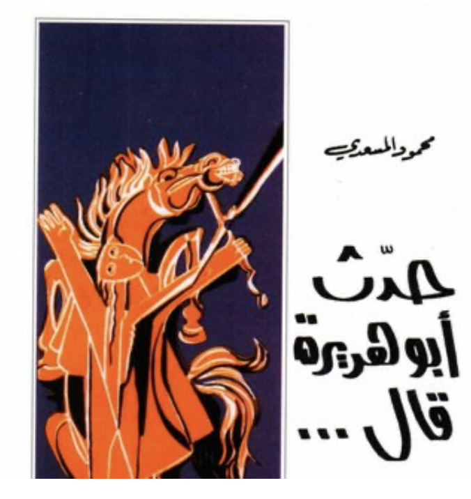

Cover of Haddatha Abu Hurairah Qal by Mahmoud al-Messadi
This is part of the #100ArabNovels project, where I try to revisit the Arab Writers'Association's list of 100 most significant novels, as part of trying to understand the Arab imaginary post-2011
It is a challenge to try and understand what Mahmoud al-Messadi (1911-2004) was trying to do with Haddatha Abu Hurairah Qal (1973). Something emerges from this inchoate text, that remains hidden or under-explored or rather underdeveloped. In his foreword, Messadi asks the prospective reader, on his path to read the book to be cruel and not kind. And maybe that should be our cue to dispense with the milk of kindness to arrive at some of the insights that he himself strived to achieve. The book, roughly around 155 pages, reads more as an experiment, or a work-in-progress and maybe the history of the text itself is revealing in that regard (Messadi finished some form of a draft of the novel in the late 1930s and only revised it and prepared it for publication, much later on). Despite a long career in public service (founder of the Tunisian University, then Minister of Education, then Minister of Culture then Speaker of the Tunisian Parliament), Messadi's literary career seems to have fizzled out by the late 1940s and altogether he published three novels during his lifetime (in addition to articles and reflections). Surprisingly his magnum opus, Haddatha Abu Hurairah, remains untranslated to English (it was translated to French in 1996 and to German in 2009).
And it does carry the echo of the politics of the 1930s, the anti-colonial struggle, the questions of Arab identity and the Arabic language as a language of learning and instruction (especially in Arab countries that were under French occupation, where language became heavily politicized). All of the North African countries that were under French colonialism suffered a trauma when it came to language, and language and religion became two very politicized points of contention. But colonial violence and colonial resistance aside, this was the moment, with the inception of the golden age of Arab press and printing, when everyone in the Arab world was trying to find that voice, that register of the language that made the most sense to them, Taha Hussein, al-Aqqad, Georgie Zeidan, Ameen Rihani (among the emigres), with different approaches and different styles. And different degrees of prowess and virtuosity. It was also the great age of literary battles and literary diss-- rap battles has nothing on the exchanges some of those writers had with each other and against each other, specifically in trying to define what should 'modern Arabic' sound like and what should it say.
Enter Messadi's Abu Hurairah Said, a series of aphoristic fragments, taking Abu Hurariah as its central character, around which it tries to impart some kind of philosophical reimagining of the Arab self. One that is completely rooted in the early Islamic language and idiom and surprisingly little Islam. Messadi sunk himself so deep in the idiom of 7th C Arabic, his novel almost reads as a perfectly reconstructed protolanguage (think Jurassic Park but with language). Yet it is not purely classical and not exactly modern, its neoclassical, referring to the works of someone like Mostafa Saadeq Al-Rafe'ie (1880-1937), or the more direct reference, Louis Cheikho (1859-1927), that Messadi himself cites. To modern Arab writers who attempted the rehabilitation of classical genres such as Akhbar and Taraif to a more modern sensibility. Nevertheless, Messadi's experiment is not strictly literary, its far more ambitious, in going so far in the past to distil some kind of wisdom or insight, that may help us understand our modern predicament, or rather find our own sense of self.
From choosing a real historical character, about which a lot is not known and a lot of what we know is controversial (Abu Hurairah converted to Islam probably in his early thirties, only spent about three years with the prophet Muhammed, and yet somehow managed to transmit more than 5,000 ahadith, prophetic sayings. To give a sense of comparison, Omar Ibn al-Khattab, one of the prophet's closest companion and his father-in-law, transmitted about 500 ahadith), to choosing the format of ahadith itself, to tell of those pithy stories and encounters, that seem to take place somewhere (in the Arabian Peninsula) and nowhere and between characters that are at odds with what Messadi's Abu Hurairah is trying to say or do. One immediately thinks of Nietzsche's bid to use a literary genre to resentfully dismantle Western morality, one idea and one value at a time. Messadi lacks Nietzsche's indignation or philosophical complexity (maybe if he allowed the work to develop into something more complete, then that would have been the case). Still, the disenchantment with the way tradition has been understood and transmitted and what can be understood of it, is at the heart of what Messadi is trying to write. A historical reimagining, that impersonates the language and thought of the past so well, only to blow up a good thousand years of everything we know and understand of that past.
Messadi doesn't really bother with those thousand years. As a matter of fact, his novel is infused with a pagan spirit that is both shocking and delightful to read. The world is eternal, it's ruled by a natural law set by the force of fate, humans are pesky creatures who are mortal, weak and hypocritical. And most of what humans deem as ethical is misguided. What remains is a spirit of chivalry, hedonism and generosity of spirit that counters the complete absurdity of this entire experience. Messadi, tries to recapture that pragmatic, pre-Islamic Arab spirit, that seems so attuned to nature, its rhythms, its forces, and so shows how alienating must Islam have been for the Arabs. It's hard for us today to imagine the Arabs without Islam, but Messadi, does the impossible and tries to create a world where Islam's radical monotheism plays no part of our subject formation. The result is not always great (twice do people worship false idols and there is too much blood spilt), but Arab animism is intensely poetic, in way that might explain the predominance of poetry as a mode of thinking and a mode of expression.
This might be Messadi's lasting contribution, not rehabilitating a literary genre or reviving a particular linguistic variety, but making it possible to understand why the Arabs were the way they were and why the enigmatic density of their language could be at once, practical and astonishingly poetic. The importance of such contribution is also inevitably political. Messadi's 'historical anthropology' disguised as literary experiment helps contemporary Arabs reclaim that organic relationship with the world and themselves. Arabs can be emancipated subjects not just because a religiously sanctioned belief, but because they belong to an imaginary that fiercely defended its moral autonomy in face of a world besieged by devastating forces, that are indifferent to man as they are sinister at times.
Messadi might be slightly better than his contemporaries when it comes women, still women don't fare that better than usual. There is more of the notion of 'gender complementarity', man and woman are both necessary for each other's fulfilment, sexually, spiritually and so on, but women are not really autonomous subjects, and they don't seem to do much without the men. Nor do the 'sodomites', who are mentioned briefly and dismissively, as an afterthought in some paragraph. Although Messadi doesn't shy away from describing various forms of homosocial bonding among his reimagined Arab men, still Messadi's worldview is strictly heteronormative.
The great question of what are the Arabs (vis-a-vis other nations and culture), what is their history and what did their language say or the more important question what can it say, still dominate the conversation in the region. This last question, what can Arabic say, remains hanging till today. Messadi wants to say, it can say a lot, with very little. The density of Arabic, its spatial element (in its very classical idiom it has a stark emphasis on orientation and conception of space) and its shocking simplicity in revealing affective or metaphysical truths (a shocking realization for anyone who reads later Medieval Arabic, with endless rhyming clauses and florid style), its imaginative animism, all tell us, there is still a lot to say.